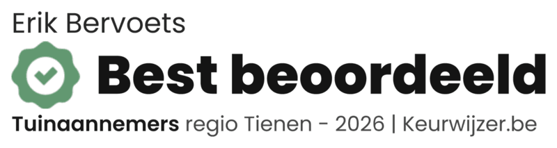

Tuinaanleg, kleine grondwerken, opritten en paden, tuinkamers, omheiningen en houten schuttingen in Vlaams-Brabant. Uw tuin, mijn zorg!
Bent u op zoek naar een vakman voor de aanleg of renovatie van uw tuin? Wilt u een nieuwe oprit, een terras, een omheining of een houten schuttingswand laten plaatsen? Bij Berretti Garden & Works kunt u terecht voor uiteenlopende tuinwerken, van afzonderlijke opdrachten tot complete tuinprojecten.
Als meewerkend zaakvoerder sta ik garant voor een feilloos verloop van de werken en ben ik persoonlijk betrokken bij de uitvoering van uw project. Zo hebt u rechtstreeks contact met de persoon die uw werken uitvoert.
Van kleine grondwerken en verhardingen tot poorten, terrassen, afsluitingen en houten schuttingswanden: Berretti helpt u om van uw buitenruimte een mooi en praktisch geheel te maken waarbij u kan genieten van een persoonlijke aanpak, van begin tot einde.
Eén aanspreekpunt voor uw tuinwerken. Van kleine grondwerken, omheiningen, poorten, houten wanden en schuttingen, tuinkamers, gazons, … tot volledige tuinrenovaties en totaalprojecten.
Van gazon en beplanting tot verhardingen en volledig afgewerkte tuinkamers: uw droomtuin wordt realiteit.
Meer over tuinaanlegVan een functionele tuinafsluiting tot een omheining met poort die aansluit bij de uitstraling van uw woning: we bekijken welke uitvoering het best past bij uw situatie.
Meer over omheiningenMet een houten wand of schutting zorgen wij voor meer privacy op uw terras. Of wij zorgen hiermee dat een gedeelte van uw tuin wordt afgeschermd met een natuurlijke en stijlvolle uitstraling.
Meer over houten wanden en schuttingenElk project begint met een gesprek over uw wensen en de mogelijkheden. Ik denk met u mee over de uitvoering en de materiaalkeuze en voer de werken zelf uit.
U hoeft niet meteen uw volledige tuin te vernieuwen. Ook voor een herstelling, nieuwe oprit, poort, terras of een afsluiting kunt u bij Berretti terecht. Ik bekijk graag samen met u wat bij uw woning, uw tuin, uw budget en plannen past.
Berretti Garden & Works – uw partner voor tuinwerken vanuit Tienen, in heel Vlaams-Brabant en omliggende regio's.
Lees onze beoordelingen op Google

Voor de renovatie van een deel van mijn tuin, vroeg ik een offerte bij Erik aan. De offerte was heel uitgebreid en goed uitgelegd. Er moesten nieuwe klinkers geplaatst worden, tegels gezet worden, grasmatten gelegd worden Nieuw tuinpoortje en nog een nieuw tuinhuis. Erik - Berretti werkt heel professioneel en zeer nauwkeurig. Ze kennen hun vak. Een aanrader!
Erik heeft bij mij een houten tuinschutting geplaatst. Van bij het eerste contact tot het plaatsen zelf is er heel stipt en correct met de gemaakte afspraken om gegaan. Het werk is professioneel gedaan en de afwerking top! Kortom een bedrijf waar je kan op rekenen en vertrouwen. Voor mijn volgende tuinwerken 1 adres!
Berretti levert TOP werk! Snel, altijd goed advies en voor de juiste prijs. Volgens mij alle variabelen voor een ideale partner. Van uitgraafwerken tot frezen, bemesten, egaliseren en plaatsen van de grasmatten... top! Erik denkt mee met je project en komt met oplossingen. Daar naast ben ik nog nooit iemand tegen gekomen die zo proper werkt... aanrader!!!
Heeft u plannen voor uw tuin? Vraag vandaag nog een gratis en vrijblijvende offerte aan. Ik neem snel contact met u op.